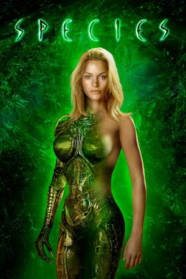

#1508 Species
 
 IMDB-Wertung: 5.8 / 10
IMDB-Wertung: 5.8 / 10  Metascore: 49
Metascore: 49 
Wissenschaftler des SETI-Instituts, einer amerikanischen Einrichtung zur Erforschung von Signalen aus dem Weltraum, empfangen eine Art DNA-Bauanleitung. Sie sollten es eigentlich besser wissen, aber im Sinne der Wissenschaft probieren sie die Instruktionen natürlich aus. Zuerst entwickelt sich nur ein unscheinbares kleines Mädchen, doch schon bald wird klar, daß das Kind übermenschliche Kräfte hat. Doch alle Erkenntnis und Reue kommen zu spät, denn das Wesen kann fliehen, und es wird ein Team von “Spezialisten” angeheuert, die es unschädlich machen soll.
Jahr: 1995
Dauer: 108 Minuten
FSK: 16
Land: USA Studio: MGMTonspuren: DTS - ,
Untertitel: Deutsch,
Auflösung: 1080p (1920x816) Größe: 10240 MB
Genre: Horror, Sci-Fi
Regisseur: Roger Donaldson
Drehbuch: Dennis Feldman
Soundtrack: Christopher Young
Darsteller:
 Ben Kingsley als Xavier Fitch
Ben Kingsley als Xavier Fitch Michael Madsen als Preston Lennox
Michael Madsen als Preston Lennox Alfred Molina als Dr. Stephen Arden
Alfred Molina als Dr. Stephen Arden Forest Whitaker als Dan Smithson
Forest Whitaker als Dan Smithson Marg Helgenberger als Dr. Laura Baker
Marg Helgenberger als Dr. Laura Baker Natasha Henstridge als Sil
Natasha Henstridge als Sil Michelle Williams als Young Sil
Michelle Williams als Young Sil Jordan Lund als Aide
Jordan Lund als Aide Don Fischer als Aide
Don Fischer als Aide- Virginia Morris als Mother
 Shirley Prestia als Victoria Roth, Ph.D.
Shirley Prestia als Victoria Roth, Ph.D.- David Selburg als Government Man
- Melissa Bickerton als Fitch's Secretary
- Stogie Kenyatta als Cop
 Gary Bullock als Motel Clerk
Gary Bullock als Motel Clerk- Caroline Barclay als Drunken Girl
- Matthew Ashford als Guy in Club
 Whip Hubley als John Carey
Whip Hubley als John Carey Patricia Belcher als Hospital Admittance Clerk
Patricia Belcher als Hospital Admittance Clerk Richard Fancy als Hospital Doctor
Richard Fancy als Hospital Doctor Dendrie Taylor als Marie
Dendrie Taylor als Marie- Dana Hee als Creature Performer
 Frank Welker als Alien Sil
Frank Welker als Alien Sil- Jimmy Chunga als Commando , uncredited
- James Ent als Lt. Steele , uncredited
- Roman Güttinger als Doctor , uncredited
- Christopher Ivins als Soldier , uncredited
 Zak Knutson als Club Doorman , uncredited
Zak Knutson als Club Doorman , uncredited Coati Mundi als Conga Player , uncredited
Coati Mundi als Conga Player , uncredited- Jason Newell als Special Forces , uncredited
- Scott McKenna als Train Hobo
- Jayne Luke als Snack Shop Clerk
- David K. Schroeder als German Tourist
 David Jensen als Conductor
David Jensen als Conductor Esther Scott als Female Conductor
Esther Scott als Female Conductor- William Utay als Colleague
- Herta Ware als Mrs. Morris
- Lucy Rodriguez als Wedding Dress Saleswoman
- Scott Sproule als Team Driver
- Susan Hauser als Lab Worker
- William Bumiller als Club Bouncer
- Anthony Guidera als Robbie, Guy Picking Up Sil
- Sara Lise als Screaming Woman
- Leslie Ishii als Hospital Nurse
- Marliese Schneider als Abducted Woman
- Robert Mendelson als Homeless Man
 Pamela Cook als Commercial Model
Pamela Cook als Commercial Model- Lisa Liberati als Bathroom Bimbo
- Ed Stone als Waiter
- Kurtis Burow als Baby Boy
Datei: X:\4-Tetralogie(M-Z)\Species\Species (1995, FSK16, 1920x816).mkv seit 13.07.2015
Festplatte: HD Collection-3(N-Z)-6(A-Z)
 Es gibt insgesamt 7 Filme in der Gruppe '4-Tetralogie(M-Z)\Species'
Es gibt insgesamt 7 Filme in der Gruppe '4-Tetralogie(M-Z)\Species'